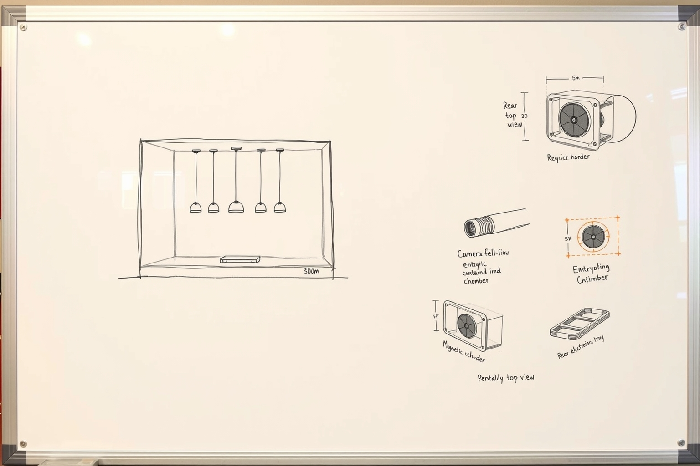

entropy c / concept 02
A buildable home prototype first; a portable NYC office demonstration second. The enclosure is a design hypothesis. The system boundaries below are the plan.
paper design · not built

Clear inward-only optical chamber
camera sees objects, not the room
camera sees objects, not the room
Quiet physical source
prisms / reflectors + one actuator first
prisms / reflectors + one actuator first
Controller in base
CoreS3 or CoreS3 SE candidate
CoreS3 or CoreS3 SE candidate
One enclosed power input
USB-C first; Ethernet/PoE optional later
USB-C first; Ethernet/PoE optional later